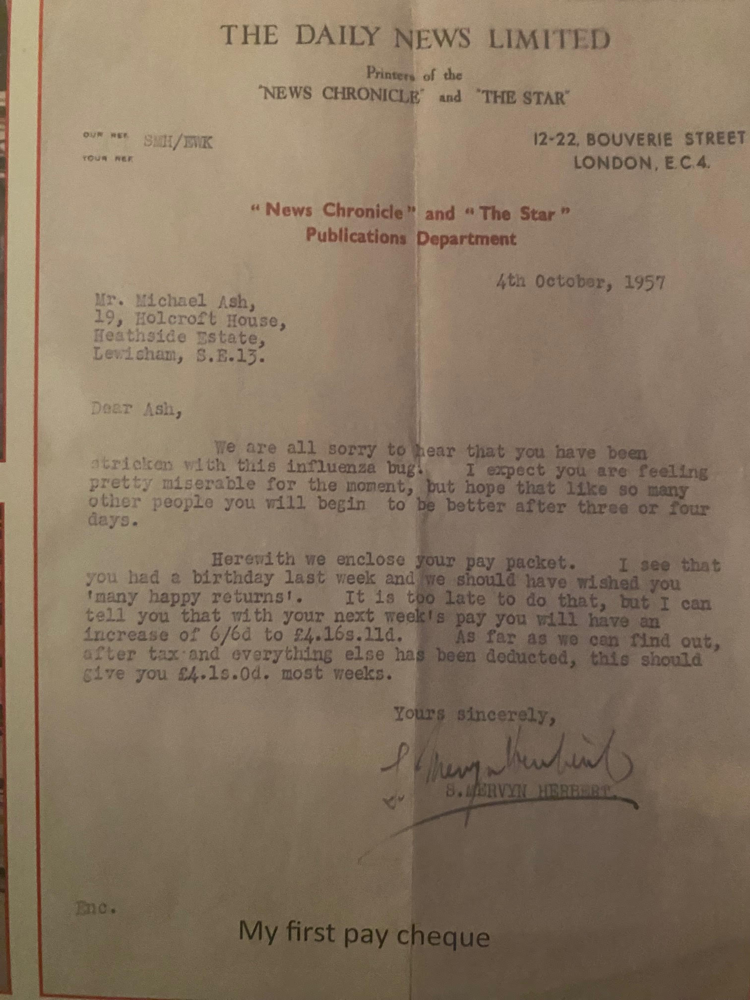
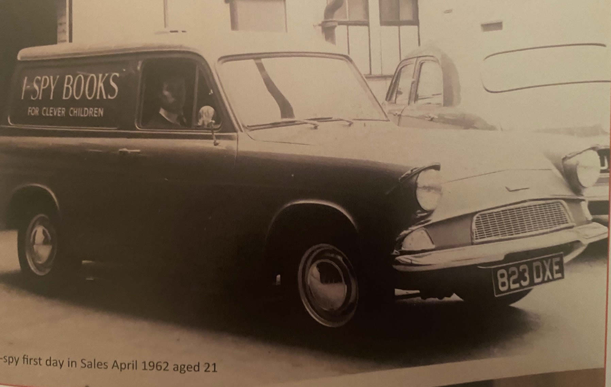

Michael Ash
Office Boy, News Chronicle
I responded to an advertisement in The Star newspaper, a sister paper to The News Chronicle, and was interviewed at the paper's offices in Bouverie Street for the position of messenger boy. Shortly afterwards I received a job offer to start on 5th April 1956 aged 15 at the princely sum of £3:2:0 per week. On the day in question I did as my mum advised, and dressed in a suit and tie whereas other boys present were in jeans and tee shirts. I truly believe this is why I was sent to the publishing office instead of the messenger boy pool. Mr Sam Mervyn-Herbert was the boss of the company's publishing including I-Spy books, a hugely popular series of children's books that sold in their millions at 6d, 1/- and 2/6d, but huge income was from Michelin Maps and Guides of which we had world wide sales rights excluding France.

After six months the post room boy was off to do his National Service and I applied for his job and started in October, and that necessitated joining as a junior the mighty NUPBPW (National Union of Printing, Bookbinding and Paper Workers) with a weekly subscription of 2/6d. I ran the post room very enthusiastically, enjoying my job and working many hours of overtime. In those days you were a junior until you were 21, so when Cadbury's, the owners, closed the paper on 17th October, I was still a junior.
Fortunately the publishing company was kept and named The Dickens Press after Charles Dickens, who was the first editor of The Daily News, later to become The News Chronicle. The Dickens Press relocated to Upper Thames Street in 1961, next door to The Mermaid Theatre backing on to The River Thames. Later that year I reached my majority (21) and when in conversation with Mr Herbert he asked me what department I would like to work in and suggested I should sell our books. Until then, and still settling into our new location, we had relied on sending out order forms. He said he liked the idea and would think about it. Soon it had been decided that they would buy a small van, fill it with I-Spy books and set me free selling to newsagents in London. It proved very successful and within 2 years I was now driving a nice estate car and taking orders for all of our range of titles, at which point more sales people were taken on. I became the senior sales person when a sales director was appointed and flourished in this position until 1969, when I left to take up the position for a small children's publisher, and after 2 years left to start my own business, Grange Books Ltd.
